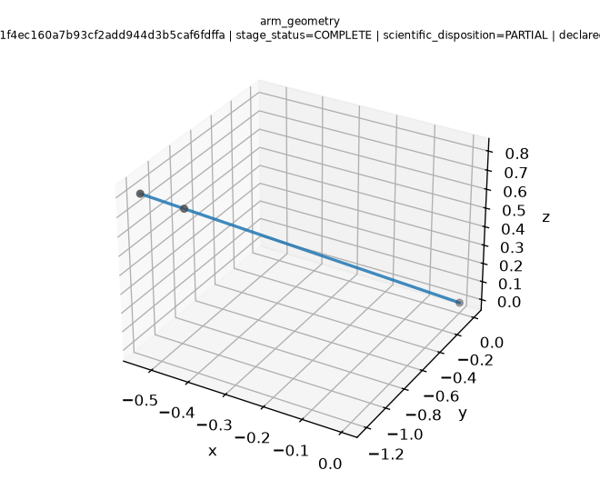
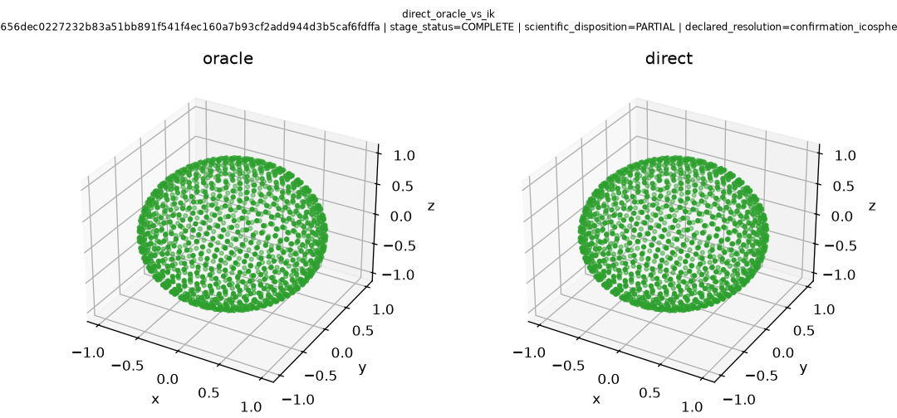
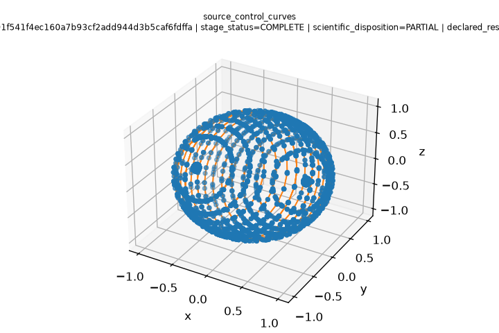
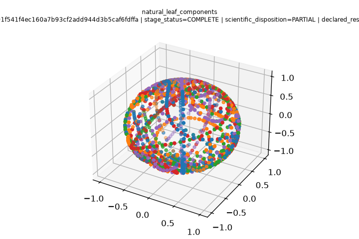
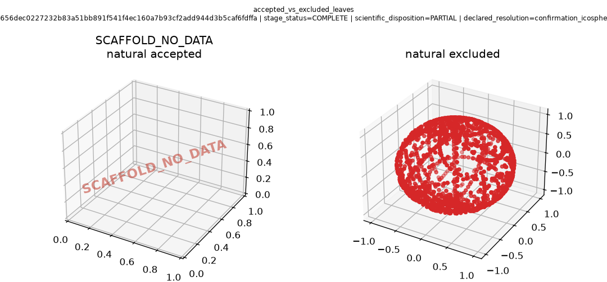
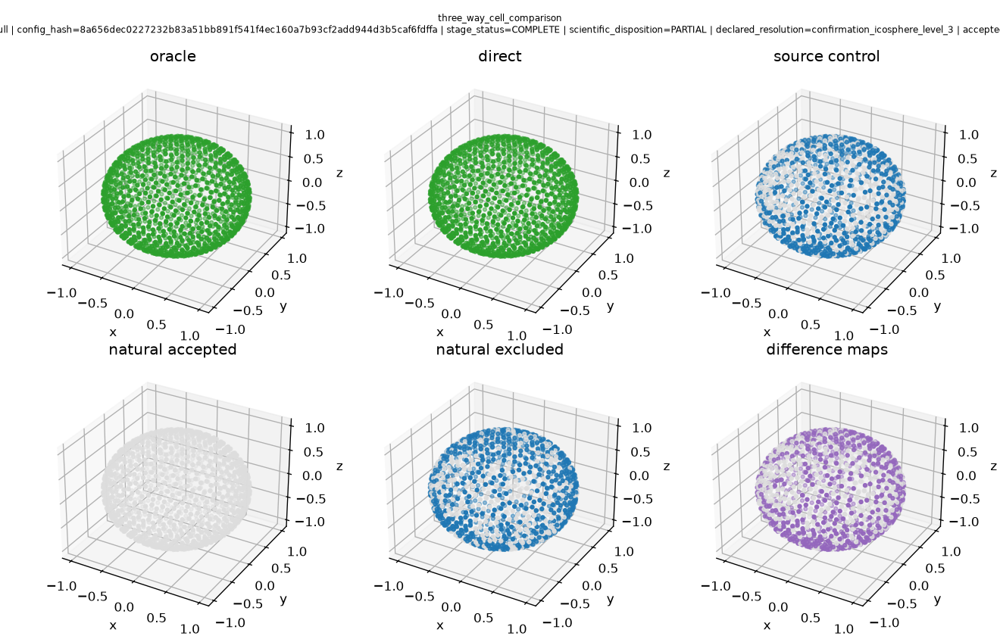
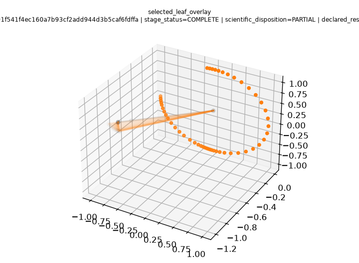
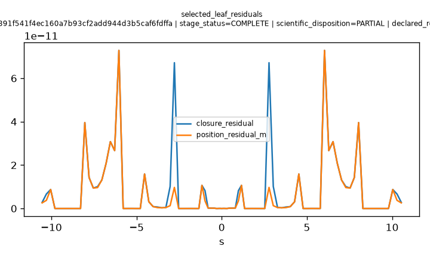
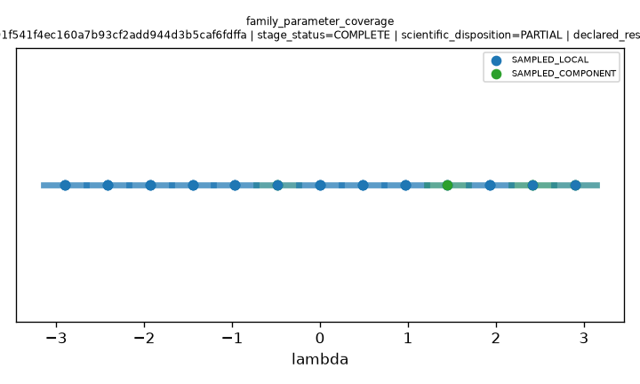

P4_OUTER_COMPLETE | mode=full | config_hash=8a656dec0227232b83a51bb891f541f4ec160a7b93cf2add944d3b5caf6fdffa | stage_status=COMPLETE | scientific_disposition=PARTIAL | declared_resolution=confirmation_icosphere_level_3 | accepted_leaves=0 excluded_leaves=39
Panels read probe JSON artifacts. Reconstruction is not accepted unless campaign.json says so.
L5 pointing image in S^2. Not a dexterous SO(3) claim. Fixed-axis UUUR remains rejected as an h=c equivalence.
Fixed lambda leaves are frozen-geometry UURU children. h=c is a source control only.
Sphere-cell panels: oracle, direct, source control, natural accepted, natural excluded, difference maps.
Accepted and excluded leaves are plotted separately.








